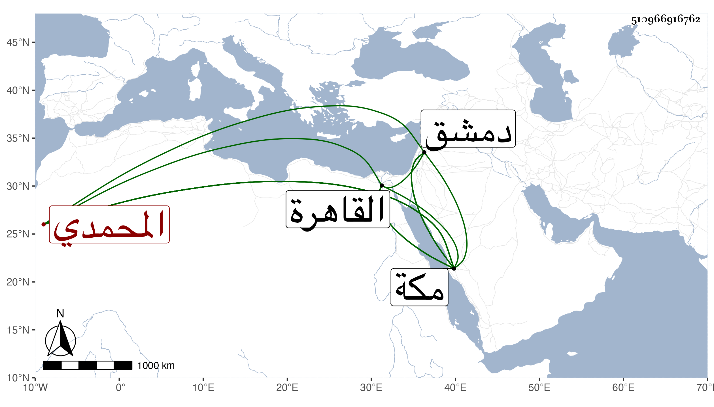

0902Sakhawi.DawLamic.ITO20230111-ara1.EIS1600.510966916762
Biography ID: 510966916762
1084
سودون المحمدي مملوك الذي قبله وعتيقه . اتصل بعد قتله بخدمة المؤيد شيخ ، ثم صار خاصكيا ورأس نوبة الجمدارية في أيام الأشرف بل رام أن يعطيه إمرة فامتنع وترك وظيفته أيضا وصار من جملة المماليك السلطانية على إقطاعه ثم كان ممن انضم للعزيز ولده فلما تسلطن الظاهر نفاه ثم أعاده وأنعم عليه بامرة عشرة بسفارة خوند البارزية لكونه زوج أختها لأبيها فاستمر مدة ثم توجه إلى مكة ناظرا بها وشاد العمائر كما كان توجه في الأيام الأشرفية فأقام نحو سنتين أو أكثر وعاد إلى القاهرة فأقام بها يسيرا واستقر في نيابة قلعة دمشق سنة ثمان وأربعين فكانت منيته بها في صفر سنة خمسين وكان دينا خيرا عفيفا عن المنكرات والفروج عاقلا ساكنا لكنه قليل المعرفة مع استبداده برأي نفسه بحيث أنه لما توجه لمكة ليصلح ما تشعب من حيطان الحرم رفع سقف البيت الشريف والاخشاب التي كانت بأعلى البيت وغيرها ومنعه أكابر مكة وغيرها من ذلك فأبى واعتل بقصد منع الدلف من المطر ولم يلتفت لما قيل من حروف تمنع الطير أن يعلو البيت وصار البيت مكشوفا أياما بدون سقف ولا كسوة وخاف جماعة من نزول بلاء بسبب ذلك فرحلوا منها إلى أن تم عمل السقف ولم يكن بمانع لما اعتل به فعمره ثانيا وتكرر منه ذلك وساءت سيرته بمكة لأجل هذا ونقم عليه كل أحد وصار يدلف أكثر من السقف القديم بل صار سقف البيت مأوى للطيور وأتعب الخدم ذلك فإنهم صاروا في كل قليل يجمعون ما يتحصل من زبل الحمام وغيره وندم هو على ما فعل وعد ذلك من سيئاته سيما وقد أهان المحب بن أبي الحسن البكري الشافعي وكان مجاورا حينئذ بالضرب وغيره لكونه أنكر على الصناع بحيث قيل إن ذلك سبب موته والواقعة مذكورة في سنة ثلاث وأربعين من أنباء شيخنا . وقد اثنى عليه العيني فقال كان دينا خيرا ، زاد غيره متعاظما وكانت ولايته بعد داود الماضي لما أنكر أهل مكة ولايته ومنعه الشريف وأرسل فورد الأمر بتولية هذا .
